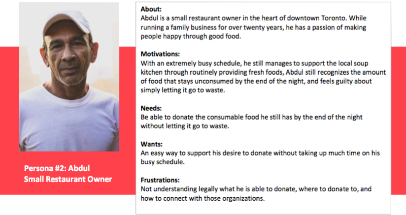
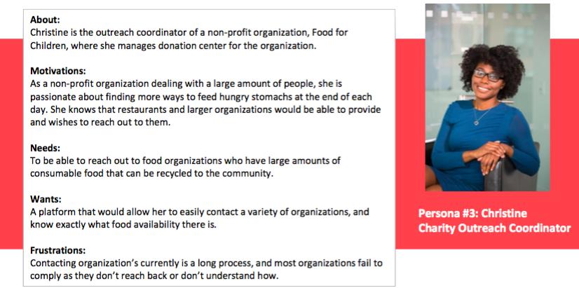
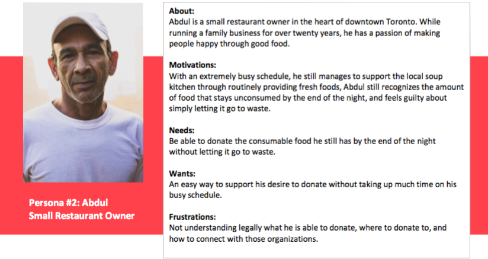
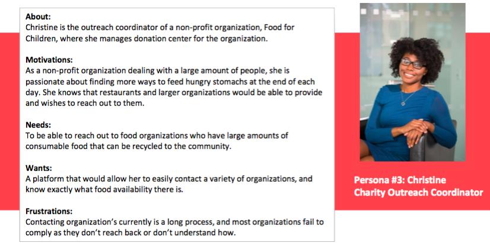

Role, Tools, & Duration
UX Designer
User Research, Personas, User flow, Ideation, Brand Design, UX/ UI Design
Figma, Mockflow
Jan 2020 — April 2020
Overview
I worked on Bread Pledge as part of a self-directed research project, alongside the supervision of a professor. Bread Pledge is an app that aims to connect businesses who have food to be rescued, to organizations serving communities in need. The UX case study aims to solve the problem of increased food waste in Toronto, outlining the research and design process of the proposed solution as a mobile app.
Key Research Findings
When developing the project proposal, I conducted secondary research to gain a better understanding of the issue of food waste existing in Toronto, why current solution attempts have not lead to any significant improvements, and what challenge exist behind developing a cohesive solution. Key findings that identify the need for a solution include:
Challenge
How can we connect and motivate production facilities, restaurants, and other institutions who have food that can be rescued, to organizations dealing with communities in need?
Solution
The solution I will explore is an app that is a platform that connects both parties involved- donating organizations and organizatins in need of rescued food- to be able to seamlessly connect and communicate, while also maintaining legal considerations that exist with food donation in Ontario, as well as educating parties on benefits to provide incentive.
Defining the User
Three distinct personas have been identified based off the research conducted. The target audiences can be identified as professionals (aged 20-60) aiming to either donate food for their company (business donor) or organize the charitable donation of the food (non-profit organization), for environmental or ethical purposes, and supporting/improving company values.
 



Product Ideation
Once the user was understood, I began with ideation of the user flow, brand design, as well as wireframe sketches in order to define the direction of the app before diving into the actual design. Based off the preliminary research findings and the user personas, the objectives the app should aim to meet include: